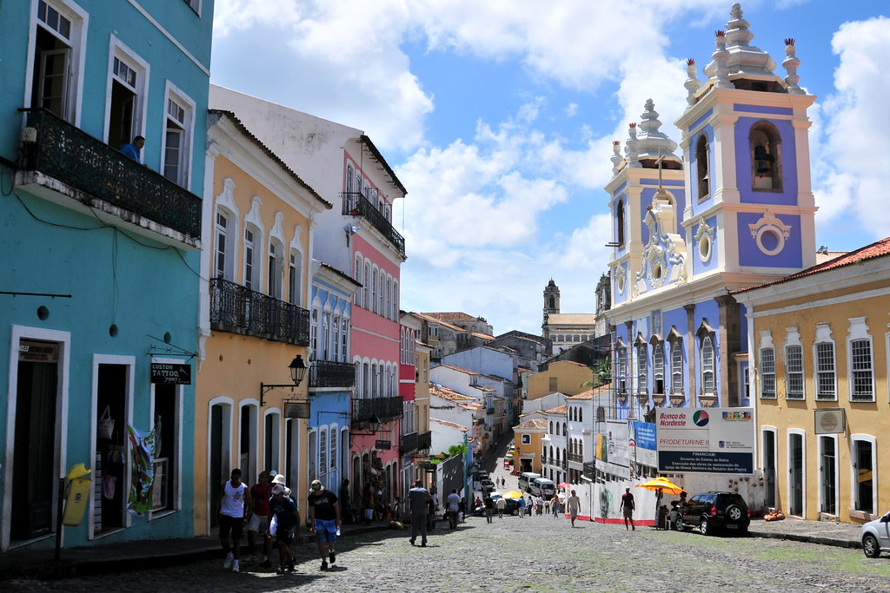
O que é que a baiana tem? (Dorival Caymmi) · tambores no Pelourinho · o berimbau da roda de capoeira
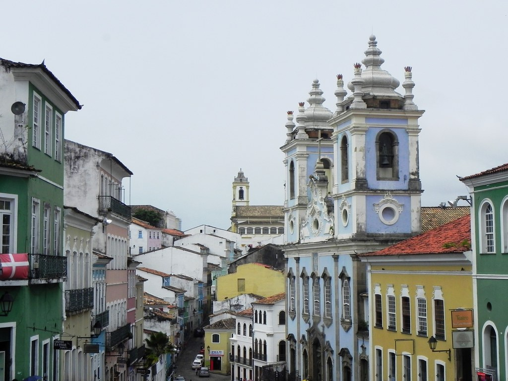
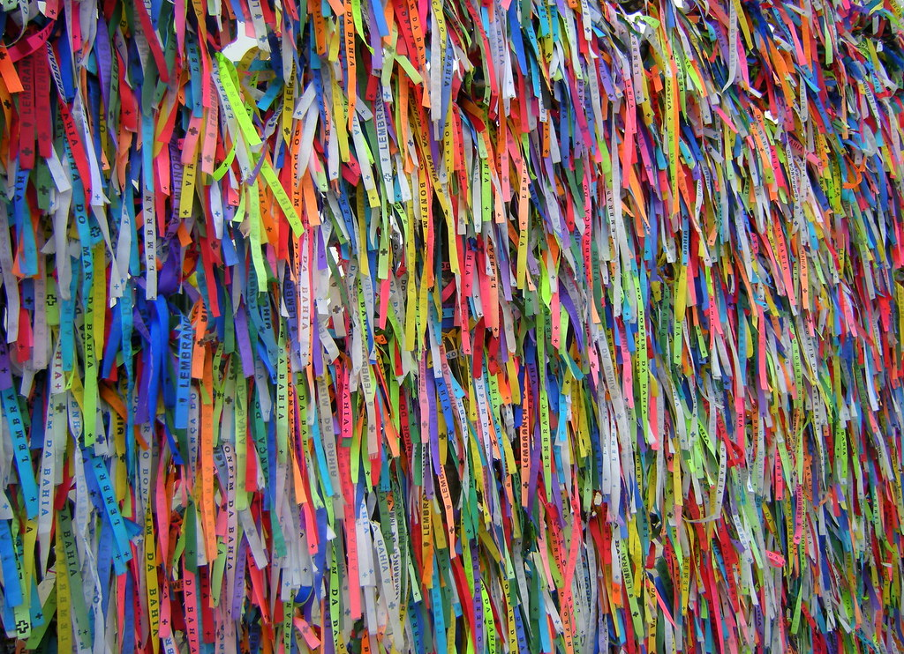
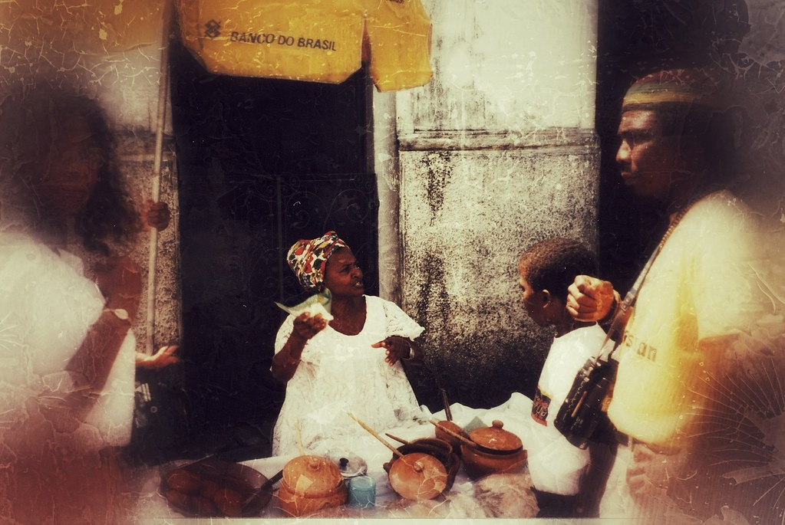
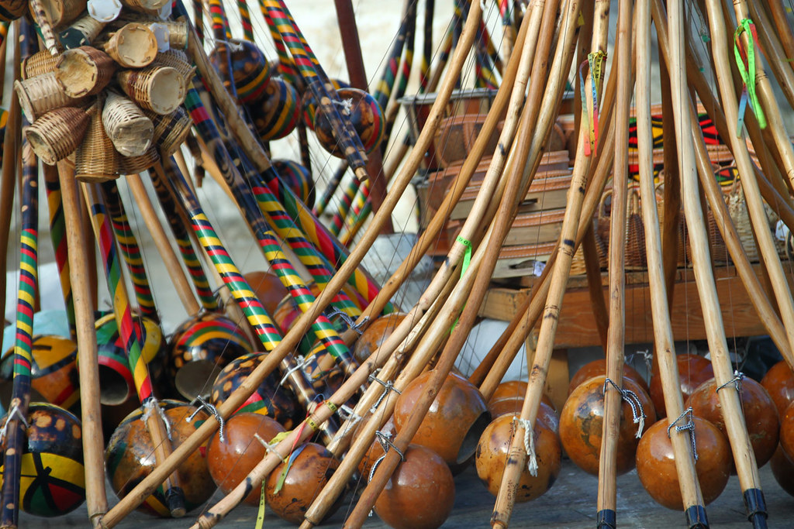
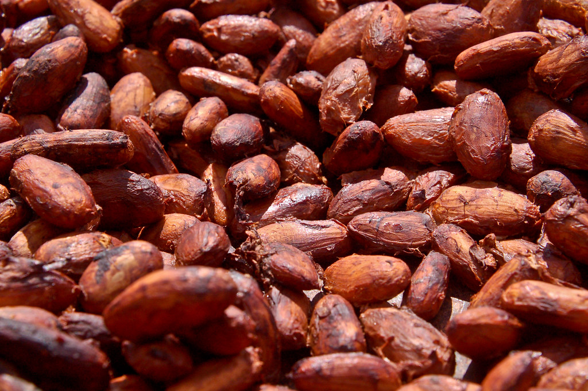
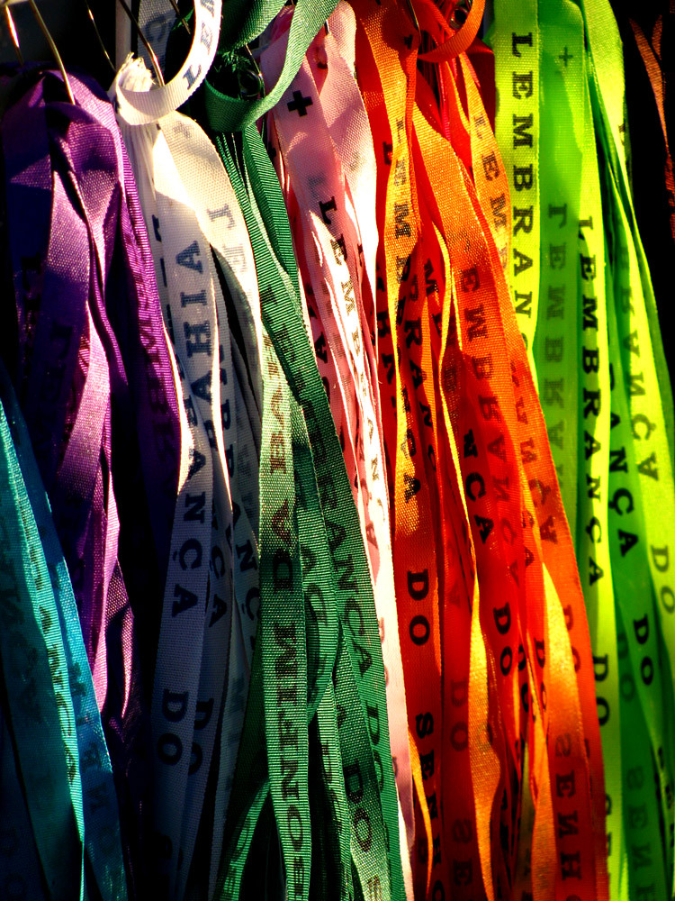
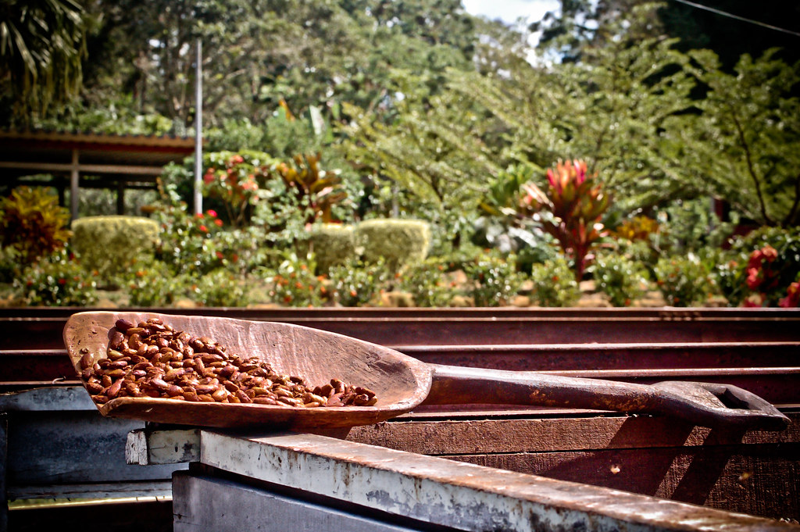
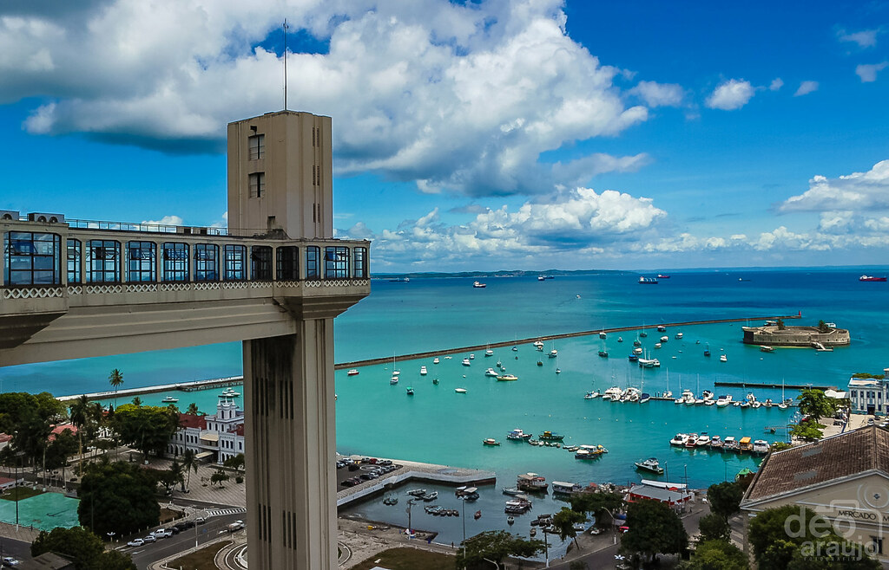
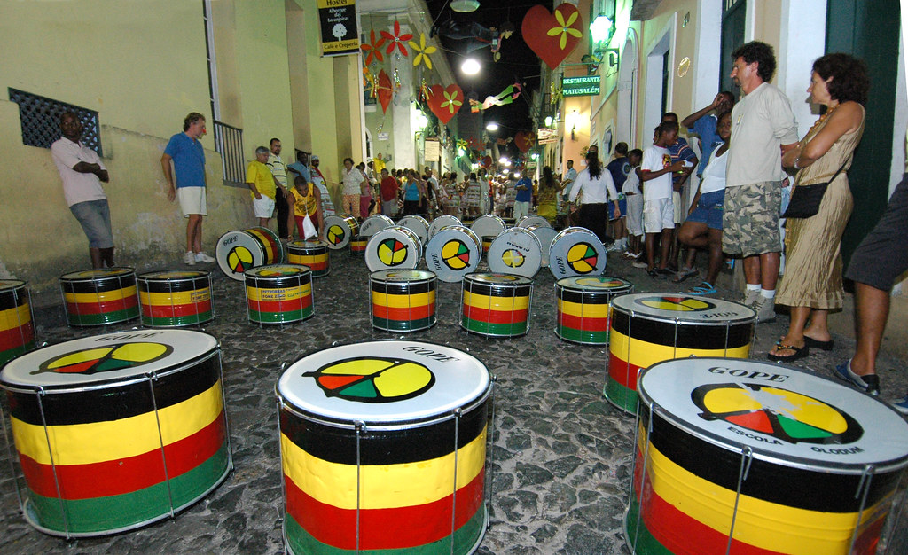
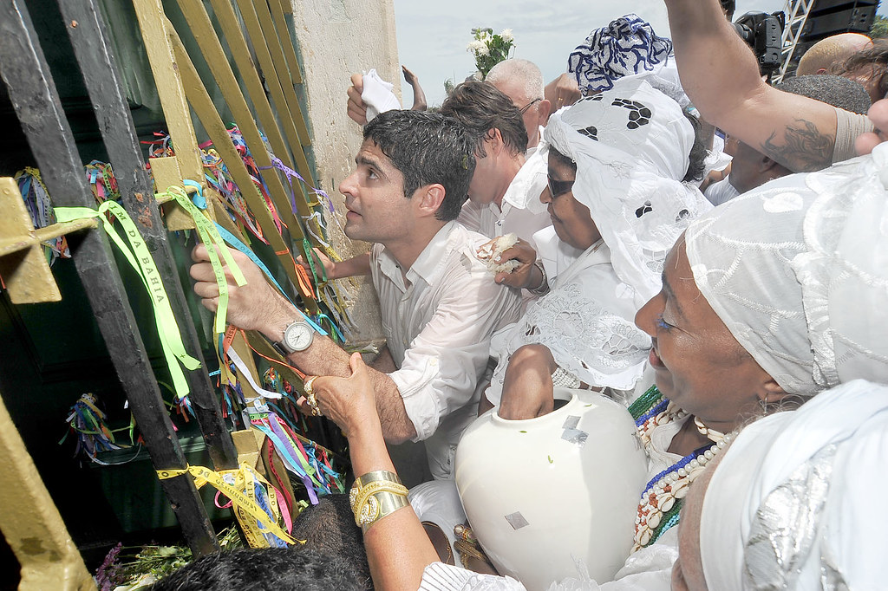
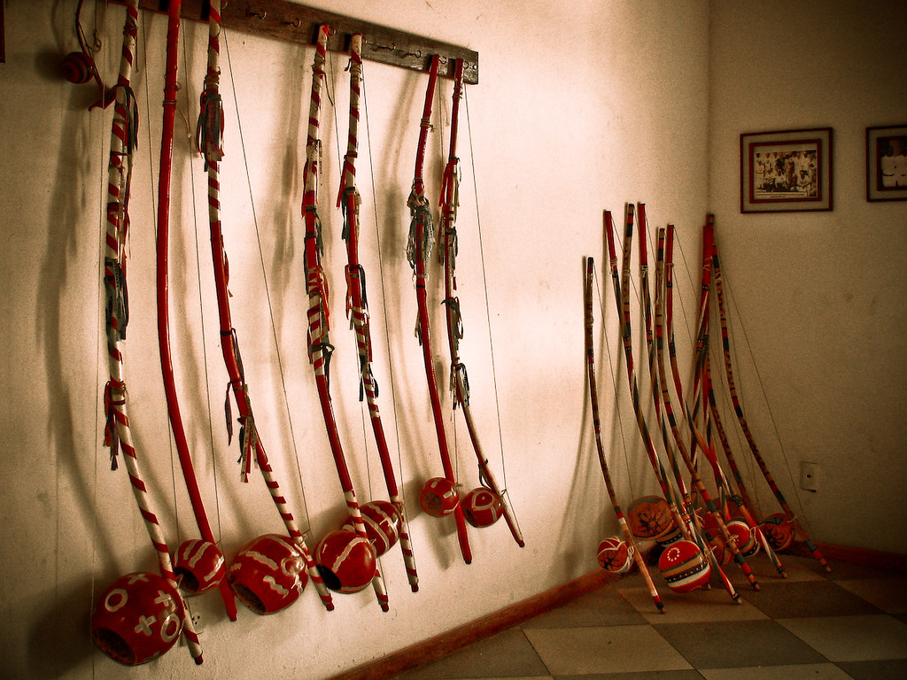
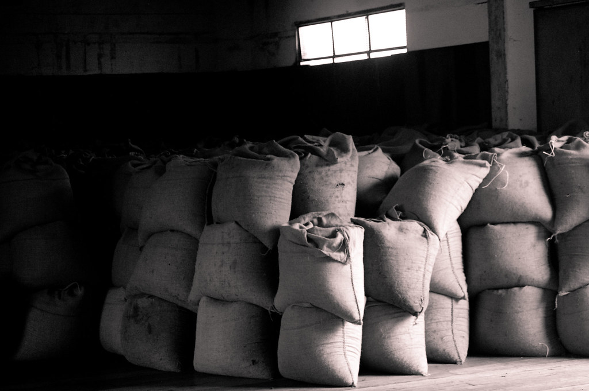
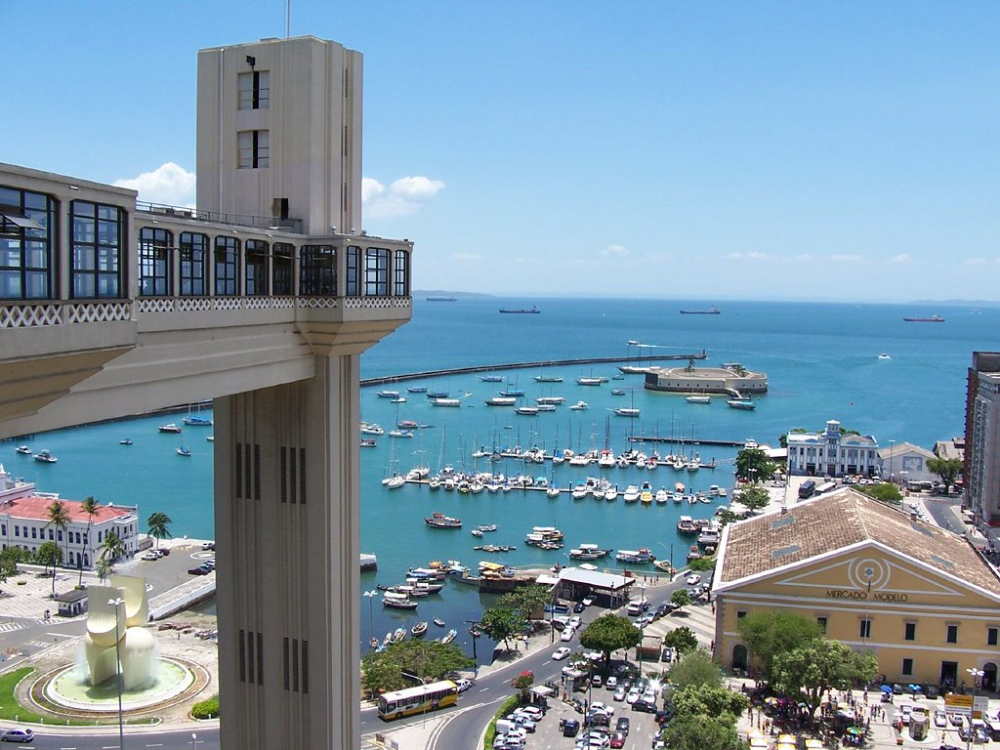
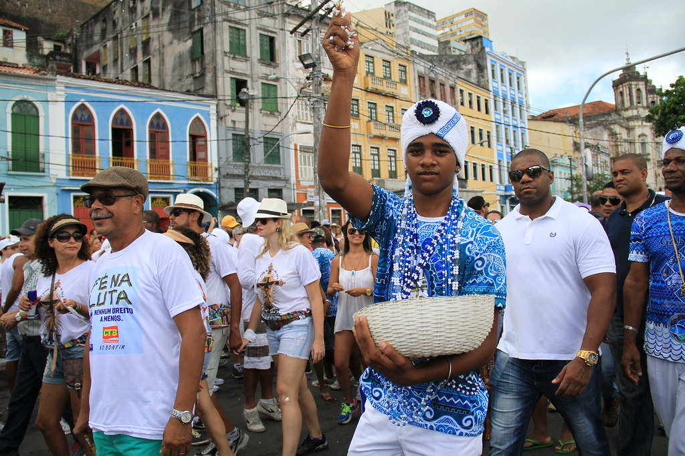
Casarões cor de bala — fachadas azul, amarelo e rosa com sacadas de ferro: o ritmo e a paleta da estampa.
Saia da baiana — a roda branca de renda em movimento, sem rosto e sem caricatura.
Fitas do Bonfim — só as cores e o balanço das fitas, sem o texto bordado.
Berimbau — a cabaça e o arco entram como desenho de ornamento.
Cacau — a semente e o fruto do sul da Bahia, para o lenço e a barra.
Tambor pintado — as listras vermelho, amarelo e verde como ritmo; sem logo de bloco.
Três casarões cor de bala do Pelourinho e, dobrando a esquina, a saia branca rendada de uma baiana. No gradil, fitas coloridas ao vento.
Protagonista: as fachadas coloridas do Pelourinho, com janelas e sacadas de ferro.
Em volta: a barra rodada da saia branca de renda (só a saia, em movimento) e fitas coloridas amarradas no gradil.
Fundo: o azul do céu de Salvador, chapado; a pedra da ladeira na base (respiro para a assinatura).
Decorações: pontas de fita e florzinhas de renda.
Vestido longo de saia ampla e rodada, blusa de renda; Havaianas: palmilha casarões e tira em fita listrada de cores.
O ofício das baianas de acarajé é Patrimônio Cultural do Brasil (IPHAN, 2004): a proposta prevê parceria com a associação das baianas. Nada de símbolo religioso de matriz africana; fitas sem texto.
Centro Histórico de Salvador: Patrimônio Mundial UNESCO (1985). Ofício das Baianas de Acarajé: IPHAN (2004). Roda de capoeira: Patrimônio Imaterial da Humanidade UNESCO (2014). Fotos: Flickr e Wikimedia Commons (via Openverse), autor e licença em cada imagem; local conferido no título, nas tags ou na descrição.